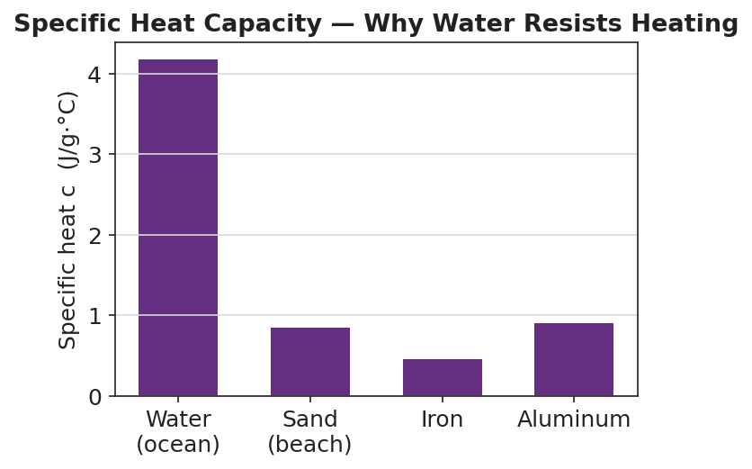

01 Phenomenon
It is the same sunny afternoon at the beach. The Sun shines the same on every part of the shore. Walk barefoot across the dry sand and it is scorching — you hop from foot to foot. Take three steps into the ocean and the water is cool, almost cold. Same Sun, same hours of daylight, same energy landing on each surface — yet the sand burns and the water stays cool. After sunset, it flips: the sand cools off fast while the ocean holds its warmth.
02 Driving question
How much energy does it take to change the temperature of a sample — and why does the same energy heat some materials far more than others?
03 Notice & wonder
| I notice… | I wonder… |
|---|---|
Turn & Talk #1: Your teacher is projecting a bar chart of specific heat values. Water’s value (4.18 J/g·°C) is about five times the sand’s (0.84 J/g·°C). In one sentence: if the Sun delivers the same energy to equal masses of sand and water, which one heats up more, and by roughly how many times?
04 Initial model
Before your teacher names the equation, use this relationship you build from data: q = m × c × ΔT, where c = 4.18 J/g·°C for water and ΔT = final temperature − initial temperature.
Problem: How much energy is needed to heat 50.0 g of water from 20.0 °C to 70.0 °C?
Step 1 — Find ΔT (final − initial): ΔT = ______ − ______ = ______ °C
Step 2 — List your values: m = ______ g c = ______ J/g·°C ΔT = ______ °C
Step 3 — Substitute and solve:
q = m × c × ΔT = ( ______ )( ______ )( ______ ) = ____________ J
Is q positive or negative here? ______ Why? _______________________________________________
Check your units: which units cancel, and what unit is left for q? _______________________________________________
05 Investigate
Part 1 — ABCs: Find the pattern before the formula
A hot plate delivers measured energy to water samples. Study the table — do not use a formula yet.
| Sample | Mass of water (g) | Energy added (J) | Temperature change ΔT (°C) |
|---|---|---|---|
| 1 | 100 | 4180 | 10 |
| 2 | 200 | 4180 | 5 |
| 3 | 100 | 8360 | 20 |
Compare Sample 1 and Sample 2 (same energy). When the mass doubles, what happens to ΔT? _______________________________________________
Compare Sample 1 and Sample 3 (same mass). When the energy doubles, what happens to ΔT? _______________________________________________
For Sample 1, divide: 4180 ÷ (100 × 10) = ______. Check it on Sample 3: 8360 ÷ (100 × 20) = ______. What constant do you get both times? ______
Write a relationship connecting energy (q), mass (m), specific heat (c), and temperature change (ΔT):
q = _______________________________________________
Part 2 — Heat calculations (three equations)
Use Reference Table B values: c(water) = 4.18 J/g·°C · H_f = 334 J/g · H_v = 2260 J/g. Decision rule: temperature changing → q = mcΔT · melting/freezing → q = mH_f · boiling/condensing → q = mH_v.
Problem A — Heating (q = mcΔT): How much heat is absorbed when 120. g of water is heated from 25.0 °C to 100. °C?
Equation: __________ ΔT = ______ − ______ = ______ °C q = ( ______ )( ______ )( ______ ) = ____________ J
Problem B — Melting (q = mH_f): How much heat is needed to melt 45.0 g of ice at 0 °C into water at 0 °C?
Equation: __________ q = ( ______ )( ______ ) = ____________ J
Problem C — Boiling (q = mH_v): How much heat is needed to boil 30.0 g of water at 100 °C into steam at 100 °C?
Equation: __________ q = ( ______ )( ______ ) = ____________ J
- Problems B and C have no ΔT and no c. Why not? _______________________________________________
Part 3 — Reading the bar chart
Look at figures/specific_heat_capacities.png:

Which material has the highest specific heat? ______ Which has the lowest? ______
A metal park bench heats up fast in the sun and burns you. Use the chart to explain why metal heats faster than water for the same sunlight.
06 Make it make sense
For each problem below, choose the right equation, substitute, and solve. These are the same problems you practiced in the Investigation — confirm your work here. Use c(water) = 4.18 J/g·°C, H_f = 334 J/g, H_v = 2260 J/g.
1. Heating: How much heat is absorbed when 120. g of water is heated from 25.0 °C to 100. °C?
Equation: __________ ΔT = ______ °C q = ( ______ )( ______ )( ______ ) = ____________ J
2. Melting: How much heat is needed to melt 45.0 g of ice at 0 °C into water at 0 °C?
Equation: __________ q = ( ______ )( ______ ) = ____________ J
3. Boiling: How much heat is needed to boil 30.0 g of water at 100 °C into steam at 100 °C?
Equation: __________ q = ( ______ )( ______ ) = ____________ J
07 Key vocabulary
- specific heat capacity (c)
- the energy needed to raise the temperature of one gram of a substance by one degree Celsius, in J/g·°C; the value of *c* in q = mcΔT; water's high value (4.18) explains why the ocean resists heating while sand (≈ 0.84) heats quickly
- heat of fusion (H_f)
- the energy needed to melt one gram of a solid into a liquid at its melting point, with no temperature change; the value used in q = mH_f; for water, 334 J/g
- heat of vaporization (H_v)
- the energy needed to boil one gram of a liquid into a gas at its boiling point, with no temperature change; the value used in q = mH_v; for water, 2260 J/g — far larger than the heat of fusion
Use each term in a sentence about today’s investigation. Do not copy the definition — describe something you actually calculated or observed.
specific heat capacity: _______________________________________________ _______________________________________________
heat of fusion: _______________________________________________ _______________________________________________
heat of vaporization: _______________________________________________ _______________________________________________
08 Revise your model
Return to your Initial Model (50.0 g of water, 20 → 70 °C). Add vocabulary labels:
Draw a box around the value c (4.18). Label it “specific heat capacity.”
Circle ΔT. Label it “final − initial.”
Mark whether q is positive or negative, and write why: ______ because _______________________________________________
Write a revised appositive sentence for the result you calculated:
The specific heat capacity of water — _________________________ — is the value of c that made q = ___________ J for this sample.
Then finish this Because / But / So sentence:
At the beach, the sand gets much hotter than the ocean under the same Sun because __________________________________________, but __________________________________________, so __________________________________________.
09 Exit ticket
(a) How much heat is absorbed when 80.0 g of copper (c = 0.385 J/g·°C) is heated from 25.0 °C to 75.0 °C? Show the formula and substitution.
Equation: __________ ΔT = ______ − ______ = ______ °C q = ( ______ )( ______ )( ______ ) = ____________ J
(b) How much heat is needed to boil 25.0 g of water at 100 °C into steam at 100 °C? (H_v = 2260 J/g.) Show the formula and substitution.
Equation: __________ q = ( ______ )( ______ ) = ____________ J
(c) In one sentence, explain the sign convention: when a sample cools down, is its q positive or negative, and why?
10 Explore further
- Specific heat lab (metal samples): Heat known masses of aluminum, iron, and copper shot in boiling water, then drop each into a measured mass of room-temperature water in a calorimeter (foam cup). Record the water's temperature rise. Using q = mcΔT and q_lost = −q_gained, students solve for the metal's specific heat and compare to the accepted value. Connect results to the bar chart in `figures/specific_heat_capacities.png`.
- Calorimetry of food / hand warmer: Burn a peanut or cheese curl under a can of water (food calorimetry), or activate a chemical hand warmer in a cup of water, and use q = mcΔT on the water to measure the energy released. A clean, motivating real-world tie to the Nutrition Facts panel (Calories) and to exothermic reactions.
- Ice-melting calorimetry: Drop a known mass of ice into warm water and measure how much the water cools. The energy lost by the water (q = mcΔT) goes into melting the ice (q = mH_f). A direct, hands-on use of the heat-of-fusion equation.
- Boiling Point (Ice or Water, Ethanol) — Javalab: The Javalab "Boiling Point" simulation lets students watch temperature plateau during a phase change, reinforcing that energy added during boiling goes into H_v (breaking attractions) rather than into raising the temperature — the conceptual companion to the q = mH_v equation.